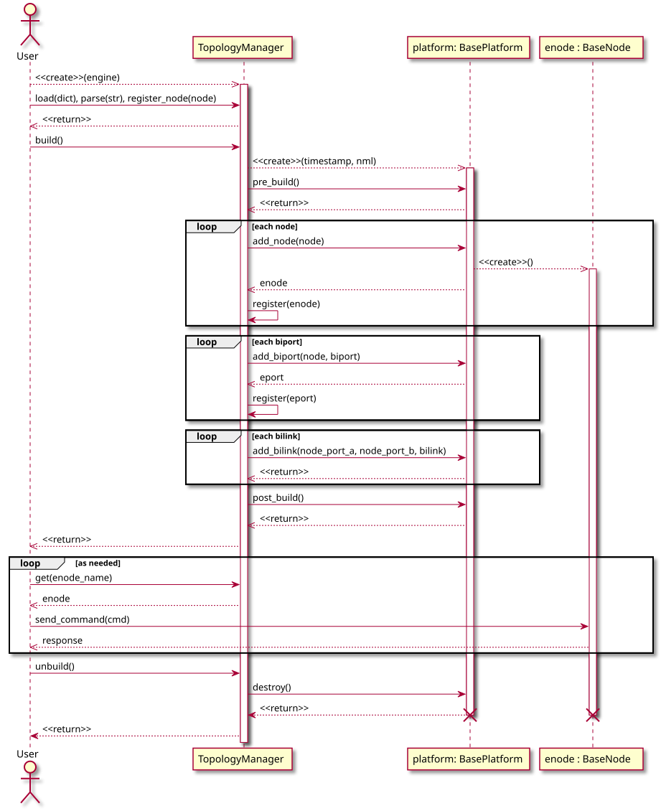
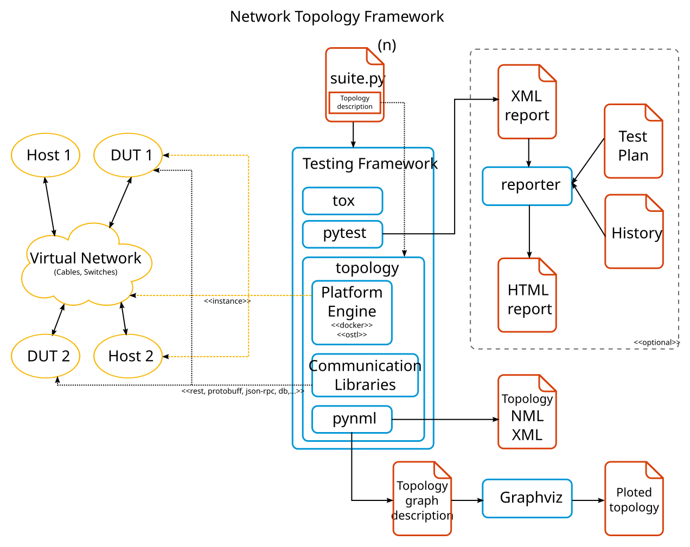
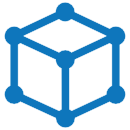

User Guide¶
Installing¶
pip install topology
Topology requires at least one Platform Engine which is the engine responsible to build the topology. By default topology just includes a debug dummy platform only. We recommend to use the topology_docker engine which can be installed with:
pip install topology_docker
Further setup is required, in particular it is required to install docker and setup your environment to run some commands as root. See the topology_docker documentation for more information.
Describing topologies¶
The Topology framework supports a custom textual format that allows to quickly specify simple topologies that are only composed of simple nodes, ports and links between them.
The format for the textual description of a topology is similar to Graphviz syntax and allows to define nodes and ports with shared attributes and links between two endpoints with shared attributes too.
# Nodes
[type=switch attr1=1] sw1 sw2
hs1
# Ports
[speed=1000] sw1:3 sw2:3
# Links
[linkattr1=20] sw1: -- sw2:
[linkattr2=40] sw1:3 -- sw2:3
In the above example two nodes with the attributes type and attr1 are
specified. Then a third node hs1 with no particular attributes is defined.
Later, we specify some attributes (speed) for a couple of ports. In the same
way, a link between endpoints MAY have attributes.
An endpoint is a combination of a node and a port name, but the port is
optional. If the endpoint just specifies the node (sw1:) then the next
available numeric port is implied.
Is up to the Platform Engine to determine what attributes are relevant to it.
By default, the only ones interpreted by the framework is identifier which
must be an unique UUID (and if missing it will be automatically assigned) and
the name which is a human readable name used for plotting.
For a more programmatic format consider the metadict format or using the
pynml.manager.ExtendedNMLManager directly.
Logging¶
Topology provides the --topology-log-dir pytest option that allows the
user to specify where the logging output will be stored. The shells that
extend PExpectShell will log their complete shell output there in files
whose name identifies the node producing the output along with the shell.
Injecting attributes¶
It may be necessary to define some attributes for the nodes outside of the topology definition. Many cases exists for this, like testing a different image using a whole suite of tests, or to specify the IP of a machine to connect to.
These attributes can be injected using an injection file: a JSON file that defines which attributes are to be added to which nodes in which test topologies.
The injection file defines a list of injection specifications, JSON dictionaries with the following keys:
- files a list of files where to look for nodes.
- modifiers a list of dictionaries with the following keys:
- nodes a list of nodes where to look for attributes.
- attributes a dictionary with the attributes and values to inject.
This is an injection file example:
[
{
"files": ["/path/to/directory/*", "/test/test_case.py"],
"modifiers": [
{
"nodes": ["sw1", "type=host", "sw3"],
"attributes": {
"image": "image_for_sw1_sw3_and_hosts",
"hardware": "hardware_for_sw1_sw3_and_hosts"
}
},
{
"nodes": ["sw4"],
"attributes": {
"image": "image_for_sw4"
}
}
]
},
{
"files": ["/path/to/directory/test_case.py"],
"modifiers": [
{
"nodes": ["sw1"],
"attributes": {
"image": "special_image_for_sw1",
}
}
]
}
]
In order to avoid lengthy injection files, groups of files or nodes can be defined using shorthands:
Files¶
The items in the files list are paths for test suites or SZN files.
- test suites are files that match with
test_*.py - SZN files are files that match with
*.szn
A complete directory can be specified too with /path/to/directory/*.
Only test suites and SZN files are selected when injecting attributes.
Some examples:
test_first_case.pyandtest_second_case.pycan both be selected withtest_*_case.py.- Any topology file can be selected with
*.szn. some_test_case.pywill never be selected, even if it is inside a directory specified with/path/to/directory/*because it is neither a test suite nor a configuration file.
Nodes¶
Several nodes can be selected too:
*will select any node; in a similar fashionhs*will select any node whose name begins withhs.some_attribute=some_valuewill select any node that has that specific pair of attribute and value already defined (either if that pair was defined in the topology definition or by attribute injection).
Overriding attributes¶
An attribute that was set in the topology definition will be overriden by another one with the same name in the injection file.
The order in which attributes are defined in the injection file matters. For
example, in this example the image attribute for
sw1 in /path/to/directory/* was set to image_for_sw1_sw3_and_hosts
first, but after this, it was overriden to special_image_for_sw1 because of
the second injection specification.
The low-level shell API¶
The test execution machine communicates with the topology nodes through their shells. This can be done by simply sending a command to the node like this:
ops1('some command', shell='the_node_shell')
This kind of communication is informally known as rapid fire.
Usually, this kind of command execution is not done directly in the test case, but done inside a communication library.
Now, rapid fire allows the user to send commands to the node without much typing but without much fine control also. For certain situations, is necessary to specify several other shell communication parameter besides of the command that is to be sent. For this situations, the low-level shell API comes handy.
Using the API¶
Each node object has one or more shells that can be used to communicate with
it. These shells are closely related to the nature of the node. For example, a
host node (basically, a node that represents a computer that runs Linux) has
a bash shell, because these Linux hosts come with a bash shell.
These shells are represented by a shell object that can be obtained directly from the node in this way:
bash = hs1.get_shell('bash')
The get_shell method of the nodes returns the shell object specified in its
argument. This object is the one who provides the low-level shell API to the
user.
The complete API is defined in the methods for the BaseShell class of the
shell.py module included in the platforms package of topology,
found in topology.platforms.shell.BaseShell.
Warning
The low-level shell API is public and intended for advanced usage. This means that the user will have access to certain shell attributes like the prompt that it should be matching. Misuse of this low-level API can make the high-level API (rapid fire) to get out of sync if the prompt is not rematched properly in the low-level API. Use with caution.
Context manager for non-default shells¶
To avoid setting a non-default shell repeatedly in rapid fire calls, like in:
hs1('from bar import foo', shell='python')
hs1('foo.something()', shell='python')
hs1('foo.otherthing()', shell='python')
a context manager can be used. For example, this can be done for high-level shell usage:
with hs1.use_shell('python') as python:
hs1('from bar import foo')
hs1('foo.something()')
hs1('foo.otherthing()')
This can be done for low-level shell usage:
with hs1.use_shell('python') as python:
python.send_command('from bar import foo')
python.send_command('foo.something()')
python.send_command('foo.otherthing()', timeout=99)
python.get_response()
Overview of the API methods¶
There are two main methods that provide most of the functionality in the API:
send_commandget_response
The first one receives the following arguments:
command: the command to be executed in the shell, mandatorymatches: a list of strings that are to be matched by the shell (please see Some examples of send_command), optional, defaults toNonenewline:Trueif the shell should add a return character after the command,Falseotherwise, optional, defaults toTruetimeout: the amount of seconds to wait for the shell to return something that matches with the shell prompt (or with some element ofmatchesif defined), optional, defaults toNoneconnection: the shell connection to use (this will be explained in more detail in Using multiple shell connections), optional, defaults toNone
Some examples of send_command¶
matches¶
This is useful for situations where the execution of a command will not return the usual shell prompt. For example, if a command needs confirmation from the user, this can be handled like this:
bash = hs1.get_shell('bash')
bash.send_command(
'rm -i some_file', matches=['rm: remove regular file ‘some_file’?']
)
bash.send_command('y')
newline¶
If you have to handle a shell that performs some action immediately when a certain command is typed (some command that does not need a following return key press), then this argument can be useful because no extra return will be sent after the command:
bash = hs1.get_shell('bash')
bash.send_command('command that needs no following return', newline=False)
timeout¶
Shells will usually have a default timeout value that is used always when a
command is executed. One example of such shell is the topology-provided
PExpectShell that uses the pexpect package for its implementation.
When a command takes more than this default time to execute, a timeout
exception will be raised, to avoid this, you can use this argument:
bash = hs1.get_shell('bash')
bash.send_command('command that takes very long to return', timeout=900)
Some examples of get_response¶
Be aware that send_command returns no output, if a command is sent to the
shell in this way, get_response is to be executed after it to get any
output that the command execution may have produced:
bash = hs1.get_shell('bash')
bash.send_command('echo "something")
assert bash.get_response() == 'something'
Using multiple shell connections¶
Nodes have a close relationship with their shells, as mentioned before a Linux
host will have one bash shell only, for example. Nevertheless, it may be
possible to have more than one connection to the mentioned shell.
The shell API provides a connection argument in its methods to allow the
user to specify the shell connection that is to be used to execute the command
in the shell.
Shells will have a default connection, which is the connection that is used
if connection is not specified (that means, using the default value of
None for connection). Of course, before using any additional connection
it must be created first. This can be done explicitly by calling the shell
connect method, but is usually not necessary, by specifying a new
connection in send_command a new connection is created automatically:
bash = hs1.get_shell('bash')
bash.send_command('echo "connection 1", connection='1')
bash.send_command('echo "connection 2", connection='2')
assert bash.get_response(connection='1') == 'connection 1'
assert bash.get_response(connection='2') == 'connection 2'
Managing the default connection¶
The shell objects have a default_connection attribute that returns the
default connection that is set at that moment. By assigning it to other value,
the default connection can be changed:
bash = hs1.get_shell('bash')
bash.send_command('echo "connection 0")
assert bash.get_response() == 'connection 0'
bash.send_command('echo "connection 1", connection='1')
assert '0' == bash.default_connection
bash.default_connection = '1'
# Notice how by not specifying the connection argument here, the default
# connection is used
assert bash.get_response() == 'connection 1'
Connecting and disconnecting multiple connections¶
The API provides the following methods too:
connectdisconnectis_connected
They are quite self-explanatory, and they all receive the connection
argument that specifies on which connection the method operates. Please
remember that the default connection is used if no value is set for the
connection argument.
Using the topology executable¶
The topology executable allows to build topologies on demand and interact
with them. The topology program allows to launch a topology from a textual
description or from a test (see below). The topology program is installed
as part of the Topology framework.
$ topology --help
usage: topology [-h] [-v] [--version] [--platform {}] [--non-interactive]
[--show-build-commands] [--plot-dir PLOT_DIR]
[--plot-format PLOT_FORMAT] [--nml-dir NML_DIR]
[--inject INJECT]
topology
Network Topology Framework using NML, with support for pytest.
positional arguments:
topology File with the topology description to build
optional arguments:
-h, --help show this help message and exit
-v, --verbose Increase verbosity level
--version show program's version number and exit
--platform {} Platform engine to build the topology with
--non-interactive Just build the topology and exit
--show-build-commands
Show commands executed in nodes during build
--plot-dir PLOT_DIR Directory to auto-plot topologies
--plot-format PLOT_FORMAT
Format for plotting topologies
--nml-dir NML_DIR Directory to export topologies as NML XML
--inject INJECT Path to an attributes injection file
You can run a topology and interact with their nodes:
$ cat my_topology.szn
# +-------+ +-------+
# | | +-------+ +-------+ | |
# | hs1 <-----> sw1 <-----> sw2 <-----> hs2 |
# | | +-------+ +-------+ | |
# +-------+ +-------+
# Nodes
[type=openvswitch name="Switch 1"] sw1
[type=openvswitch name="Switch 2"] sw2
[type=host name="Host 1"] hs1
[type=host name="Host 2"] hs2
# Links
hs1:1 -- sw1:3
sw1:4 -- sw2:3
sw2:4 -- hs2:1
This topology can be run and interacted with like this:
$ topology --platform=docker my_topology.szn
Starting Network Topology Framework v0.1.0
Building topology, please wait...
Engine nodes available for communication:
sw1, sw2, hs1, hs2
>>> response = hs1('uname -r', shell='bash')
[hs1].send_command(uname -r) ::
3.13.0-23-generic
>>> response
'3.13.0-23-generic'
Using with pytest¶
The topology framework install a pytest plugin that provides, among other
things the topology fixture. This fixture is a module level fixture that
will try to find a global variable called TOPOLOGY with the textual
description of the topology. If found, it will parse it and build it with the
platform engine specified with the new pytest --topology-platform
parameter.
Test will be able to interact with the topology nodes by calling
topology.get('nodeid') function. When all test are done, the fixture will
unbuild the topology automatically. In other words, all tests in a module
share the same topology.
TOPOLOGY = """
# +-------+ +-------+
# | | +-------+ +-------+ | |
# | hs1 <-----> sw1 <-----> sw2 <-----> hs2 |
# | | +-------+ +-------+ | |
# +-------+ +-------+
# Nodes
[type=openvswitch name="Switch 1"] sw1
[type=openvswitch name="Switch 2"] sw2
[type=host name="Host 1"] hs1
[type=host name="Host 2"] hs2
# Links
hs1:1 -- sw1:3
sw1:4 -- sw2:3
sw2:4 -- hs2:1
"""
def test_example(topology):
"""
Example text for topology.
"""
sw1 = topology.get('sw1')
sw2 = topology.get('sw2')
hs1 = topology.get('hs1')
hs2 = topology.get('hs2')
assert sw1 is not None
assert sw2 is not None
assert hs1 is not None
assert hs2 is not None
# Assert that Linux kernel version >= 3
version = hs1('uname -r').split('.')
assert version[0] >= 3
Added pytest arguments¶
--topology-platform: | |
|---|---|
| Platform Engine to build the topology with. | |
--topology-inject: | |
| Path to an attributes injection file, See the Attribute Injection section above. | |
--topology-plot-dir: | |
| Directory to auto-plot topologies. All topologies found will be plotted to this directory automatically. | |
--topology-plot-format: | |
| Format for ploting topologies (default ‘svg’) This option requires Graphviz installed. | |
--topology-nml-dir: | |
| Directory to export topologies as NML XML. All topologies found will be exported to NML XML to this directory automatically. | |
Added pytest markers¶
test_id(id): | Assign a test identifier to the test. The test id will __always__ be added to the jUnit XML report. For example: from pytest import mark
@mark.test_id(10000)
def test_example(topology):
...
|
|---|---|
platform_incompatible(platforms, reason=None): | |
Mark a test as incompatible with a list of platform engines. The test will be skipped automatically if it is attempted to be run with an incompatible platform. Optionally specify a reason for better reporting. For example: from pytest import marl
@mark.platform_incompatible(['debug'], reason='Not ready yet')
def test_example(topology):
...
|
|
Plugins Development Guide¶
The Topology framework is easily extendable. In particular, you can extend the platform where the topology is built and run (virtual, physical, etc) and extend the mechanisms available to communicate with the nodes (shells like vtysh or bash, RESTful API, OpenFlow, OVSDB management protocol, protobuffers, etc).
Provide a new Platform Engine¶
An Platform Engine is a system that allows to build and run a topology description. The Topology framework only provides a built-in Platform Engine for debugging. You can provide your own or install any of the known Engine Platforms available as plugins like:
Entry Point¶
The entry point to provide a new Platform Engine is
topology_platform_<api_version>, currently topology_platform_10.
To extend topology to support your platform first implement in your package a
subclass of topology.platforms.platform.BasePlatform.
It is recommended, but not required, that your package is called
topology_<platform_name> and your sublcass is called
<PlatformName>Platform.
For example, in your module topology_my.platform:
from topology.platforms.platform import BasePlatform
class MyPlatform(BasePlatform):
pass
Then specify in your setup.py:
# Entry points
entry_points={
'topology_platform_10': ['my = topology_my.platform:MyPlatform']
}
Platform Engine Worflow¶
The new platform needs to implement a set of hooks that will be called during
the build and unbuild phases of a topology setup. For a textual description of
each hook please consult the topology.platforms.platform.BasePlatform
class.
The following sequence diagram shows the interaction between the
topology.manager.TopologyManager, which drives the lifecycle of a
topology, and the Platform Engine which is responsible of building and
running the topology itself.
The interaction is straightforward, the main detail is that the add_node
hook receives a Specification Node in standard NML format and must return a
Engine Node, which is a different type of node that possess a communication
interface. Users of the topology interact with Engine Nodes, not with
Specification Nodes. Is up to the Platform Engine to implement the one
(or many) Engine Nodes. Each Engine Node inherits from the
topology.platforms.node.BaseNode class and must implement its
interface.
Another detail is that the Platform Engine must return the real or final port
name of a given Specification port in the add_biport hook. This allows
to the engine to change names to map to a specific platform or to change layout
or perform autoport connections. With this mapping the user will be able to
reference a port using the specification name and it could be mapped to the
real port name.

Provide a new Communication Library¶
A communication library is a component that a allows an Engine Node to speak in a particular language or medium. Because the Platform Engine is the one responsible to provide a functional Engine Node is up to the Platform Engine to support the use of the communication libraries provided by this extension mechanism (but it is highly recommended to do so).
Entry Point¶
The entry point to provide a new Communication Library is
topology_library_<api_version>, currently
topology_library_10.
To extend topology to support your communication library you must implement in your package a module with all your public functions and classes and create a registry entry (see below).
It is recommended, but not required, that your package is called
topology_lib_<library_name>.
For example, in your module topology_lib_my.library:
def foo_function(enode, myarg1=None, myarg2=100):
return {'ham': myarg1}
def bar_function(enode, myarg1=None, myarg2=100):
return {'ham': 200}
class FooClass(object):
def __init__(self, enode, myarg):
print(123)
__all__ = ['foo_function', 'bar_function', 'FooClass']
Then specify in your setup.py:
# Entry points
entry_points={
'topology_library_10': ['my = topology_lib_my.library']
}
With this, and if your Platform Engine builds your Engine Nodes to support
communication libraries (see below), your functions will be available
to the enode like this:
>>> sw1.libs.my.foo_function(myarg1=275)
{'ham': 275}
>>> sw1.libs.my.FooClass("hi")
123
Please note, all your functions and classes are registered inside a namespace
with the name of the communication library as you specified in the setup.py
Saving state¶
All communication functions and classes receive the Engine Node as first
parameter, all other parameters are up to the function. The enode argument
can be used to store state or data for the library or to trigger calls to other
libraries or commands as part of the communication flow.
A common pattern is to use a class to store the state of the communication
library and store an instances of that class inside the enode. The decorator
topology.libraries.utils.stateprovider() allows to easily implement this
pattern:
from topology.libraries.utils import stateprovider
class MyState(object):
def __init__(self):
self.my_variable_one = 100
@stateprovider(MyState)
def my_library_function(enode, state, arg1, arg2, keyword_arg1=None):
print(state.my_variable_one)
state.my_variable_one += 100
__all__ = ['my_library_function']
Shell command wrapping libraries¶
A common pattern is to use communication libraries to wrap and parse shell commands.
It is recommended to check first the availability of any dependency shell
using the method topology.platforms.node.BaseNode.available_shells().
See topology.platforms.node.BaseNode for more information about the
Engine Node interface.
For an example of a communication library that wrap shells commands please review the topology_lib_ping library documentation for more information..
Supporting communication libraries¶
Most of the nodes you use will derive from the common
topology.platforms.node.CommonNode. If for some reason you require to
use a different base node, say topology.platforms.node.BaseNode and you
still want to support communication libraries make sure to create and attribute
libs with an instance of topology.libraries.manager.LibsProxy:
class MyEngineNode(BaseNode):
def __init__(self, identifier, **kwargs):
super(MyEngineNode, self).__init__(identifier, **kwargs)
# Add support for communication libraries
self.libs = LibsProxy(self)
Developer Guide¶
Setup Development Environment¶
Install
pip3andtox:wget https://bootstrap.pypa.io/get-pip.py sudo python3 get-pip.py sudo pip3 install tox
Install Graphviz for topology auto-plotting:
sudo apt-get install graphviz
Configure git pre-commit hook:
sudo pip3 install flake8 pep8-naming flake8 --install-hook git config flake8.strict true
Building Documentation¶
tox -e doc
Output will be available at .tox/doc/tmp/html. It is recommended to install
the webdev package:
sudo pip3 install webdev
So a development web server can serve any location like this:
$ webdev .tox/doc/tmp/html
Running Test Suite¶
tox -e py27,py34
Running Coverage¶
tox -e coverage
webdev .tox/coverage/tmp/htmlcov/
Topology Architecture Overview¶

Design Principles¶
The topology framework was built with the following design principles in mind:
- Standard internal representation of the topology using NML.
- The framework must delegate to a plugin, a Platform Engine, the
responsibility to build the topology from the description, using a standard
interface (
topology.platforms.platform.BasePlatform) and process. - The Platform Engine will return an Engine Node that implements an
standard interface (
topology.platforms.node.BaseNode) for the user to interact with. - Nodes, ports and links support undetermined attributes or metadata, it is up to the Platform Engine to interpret and determine what metadata to use and how.
- The Engine Nodes implement a base communication interface for shells. A shell is a command line driven textual interface.
- Optionally, a Platform Engine can support Communication Libraries for their Engine Nodes, which is a extensible way to provide the communication mediums to interface with a node (RESTful API, Protobuffs, JSON-RPC, Shell parsing libraries, etc).
- The framework is independent of the platform, the communication mediums, the test suite, reporting Software and any other hardwired limitation. Nevertheless, support for the pytest suite is built-it.
- Quality, maintainability, good practices and standards compliance above all:
- Full PEP8 compliance.
- Complete test suite and coverage.
- Complete internal documentation.
- Extensive external documentation.
- Bilingual: Python 2.7 and Python 3.4 compatibility.
API Reference Documentation¶
This page was generated thanks to the Sphinx AutoAPI extension.
Framework Core¶
topology¶
topology module entry point.
Submodules¶
topology.args¶
Argument management module.
Functions¶
parse_args(): Argument parsing routine.
-
topology.args.parse_args(argv=None)¶ Argument parsing routine.
Parameters: argv – A list of argument strings. Rtype argv: list Returns: A parsed and verified arguments namespace. Return type: argparse.Namespace
topology.interact¶
topology module for interactive mode.
Functions¶
interact(): Shell setup function.
-
topology.interact.interact(mgr)¶ Shell setup function.
This function will setup the library, create the default namespace with shell symbols, setup the history file, the autocompleter and launch a shell session.
Classes¶
NamespaceCompleter: Readline completer using a dictionary namespace.
-
class
topology.interact.NamespaceCompleter(ns)¶ Readline completer using a dictionary namespace.
Inheritance
-
dict_attributes(element)¶ Type aware attributes to dictionary function.
Parameters: element – Python object to list attributes. Return type: dict Returns: A dict of the element attributes.
-
format_matches(path, attrs, prefixed)¶ Format a list of attributes to be shown in autocompleter.
Parameters: - path – List of string representing the path to the node.
- attrs – List of attributes of the node.
- prefixed – Prefix attributes must have in order to be shown.
Return type: Returns: Formatted list of attributes.
-
topology.libraries¶
topology libraries module entry point.
Submodules¶
topology.libraries.common¶Common helpers communication library implementation.
This library defines some helpers as a communication library.
assert_batch(): Execute a batch of return-less template commands in the enode shell.
-
topology.libraries.common.assert_batch(enode, commands, replace=None, shell=None)¶ Execute a batch of return-less template commands in the enode shell.
Parameters: Type:
topology.libraries.manager¶topology libraries manager module.
This module finds out which topology communication libraries plugins are installed and returns them in a dictionary.
libraries(): List all available communication libraries.
-
topology.libraries.manager.libraries(cache=True)¶ List all available communication libraries.
This function list all communication libraries it can discover looking up the entry point. This lookup requires to load all available communication libraries plugins, which can be costly or error prone if a plugin misbehave, and because of this a cache is stored after the first call.
Parameters: cache (bool) – If Truereturn the cached result. IfFalseforce reload of all communication libraries registered for the entry point.Return type: dict Returns: A dictionary associating the name of the communication library and it functions or classes: { 'comm1': [function_a, function_b], 'my_lib': [my_function_a, another_function] }
LibsProxy: Proxy object to call communication libraries.
-
class
topology.libraries.manager.LibsProxy(enode)¶ Proxy object to call communication libraries.
This proxy object is expected to be used by an engine node to add support for communication libraries.
Parameters: enode (topology.platforms.node.BaseNode) – The engine node to communicate with. Inheritance
topology.libraries.utils¶Common utilities for communication libraries.
stateprovider(): Decorator to inject a library state into an enode.
-
topology.libraries.utils.stateprovider(stateclass, statename=None, initfunc=None)¶ Decorator to inject a library state into an enode.
Parameters: - stateclass (class) – Class that will hold all the state / attribute of the library functions.
- statename (str) – Attribute name to save the instance of the state
class in the engine node (enode). By default, the name of the state class
is used like
_lib_state_<stateclass>in lower case. - initfunc (function) – A function to create the instance the state
class. It receives as arguments the enode and the state class and MUST
return and instance of that class already initialized. If
None, the default, this decorator will create an instance of the state class without any arguments or keyword arguments.
Basic usage:
from topology.libraries.utils import stateprovider class MyState(object): def __init__(self): self.my_variable_one = 100 stateprovider(MyState) def my_library_function(enode, state, arg1, arg2, keyword_arg1=None): print(state.my_variable_one) state.my_variable_one += 100 __all__ = ['my_library_function']
In the above example the variable
my_variable_onewill be bound to theenodecalling the library functions, and each call of that library function will increase it’s value by 100.
topology.logging¶
Logging module for the Topology Modular Framework.
Classes¶
BaseLogger: Base class for Topology logger classes.FileLogger: Subclass of BaseLogger that adds a PexpectFileHandler.PexpectLogger: Special subclass that implements a logger to be used with PexpectPexpectLoggerRead: Undocumented.PexpectLoggerSend: Undocumented.ConnectionLogger: Logger for shell connections.LoggingManager: Defines an object that manage and create loggers for Topology components.
-
class
topology.logging.BaseLogger(nameparts, propagate=False, level=0, log_dir=None, *args, **kwargs)¶ Base class for Topology logger classes.
Parameters: Object read-only properties:
Variables: - nameparts (OrderedDict) –
Namespaced name of the logger. For example:
OrderedDict([ 'context': 'test_bar', 'category': 'core', 'name': 'mylogger' ])
- name (str) –
Name of this logger as concatenated nameparts. For example:
test_bar.core.mylogger
Object read-write properties:
Variables: Inheritance
- nameparts (OrderedDict) –
-
class
topology.logging.FileLogger(*args, **kwargs)¶ Subclass of BaseLogger that adds a PexpectFileHandler.
This class implements additional logic for when the
log_dirpath is changed. It will create a file with the name of the logger under thelog_dirwith the.logextension.Parameters: file_formatter (str) – Format to use in the PexpectFileHandler, defaulting to logging.BASIC_FORMAT.Inheritance
-
class
topology.logging.PexpectLogger(*args, **kwargs)¶ Special subclass that implements a logger to be used with Pexpect
logfilekeyword argument.Purpose: to log every character in the pexpect session.
Pexpect
logfileis expected to be an open file-like object, so this class implements thewrite()andflush()operations for effective duck-typing.To implement one logging per
flush()this class implements a local buffer.Pexpect loggers can be located with the name:
<context>.pexpect.<node_identifier>.<shell_name>.<connection>
Where
<context>is optional if running interactively or if the context in the LoggerManager has not been set.Parameters: - encoding (str) – Encoding to log into. The
write()interface expect bytes, so in order to log in plain text it is required to perform a decoding. Defaults toutf-8. - errors (str) – Handling of decoding errors. The
write()interface may find undecodeable characters when decoding with the selected encoding, so the handling of errors needs to be defined. The values available are the same ones that thedecodemethod of a bytes object expects in itserrorkeyword argument. Defaults toignore.
Inheritance
- encoding (str) – Encoding to log into. The
-
class
topology.logging.PexpectLoggerRead(*args, **kwargs)¶ Inheritance
-
class
topology.logging.PexpectLoggerSend(*args, **kwargs)¶ Inheritance
-
class
topology.logging.ConnectionLogger(*args, **kwargs)¶ Logger for shell connections.
Purpose: to log every
send_commandandget_responsein a low-level connection.Connection loggers can be located with the name:
<context>.pexpect.<node_identifier>.<shell_name>.<connection>
Where
<context>is optional if running interactively or if the context in the LoggerManager has not been set.Inheritance
-
class
topology.logging.LoggingManager(default_level=20, default_propagate=False)¶ Defines an object that manage and create loggers for Topology components.
Only an instance of this class is to be created, this instance exists in this module and is to be used by other components by importing its
get_loggermethod straigth from this module.This method will return a logger tailored for each of these categories, if those loggers are implemented:
- core
- library
- platform
- user
- node
- shell
- connection
- pexpect
- service
- step
Read-only properties:
Variables: categories – A list of available logging categories. Read-write properties:
Variables: Inheritance
-
get_logger(name, category='core', *args, **kwargs)¶ Get a logger tailored for the given category.
Parameters: Returns: A new logger instance of the given category.
Return type:
-
set_category_level(category, level)¶ Set the logging level property to all logger in the given category.
Parameters:
Variables¶
-
topology.logging.LEVELS¶ Simple map with the default logging levels.
OrderedDict([('NOTSET', 0), ('DEBUG', 10), ('INFO', 20), ('WARNING', 30), ('ERROR', 40), ('CRITICAL', 50)])
-
topology.logging.manager¶ Main framework wide instance of :class:LoggingManager.
<topology.logging.LoggingManager object at 0x7f0111fa24a8>
-
topology.logging.get_logger¶ Get a logger tailored for the given category.
Parameters: Returns: A new logger instance of the given category.
Return type: <bound method LoggingManager.get_logger of <topology.logging.LoggingManager object at 0x7f0111fa24a8>>
topology.main¶
Application entry point module.
topology.manager¶
topology manager module.
This module takes care of understanding the topology defined in the test suite, commanding its construction to appropriate topology platform plugin and finally commanding its destruction to the plugin also.
Classes¶
TopologyManager: Main Topology Manager object.
-
class
topology.manager.TopologyManager(engine='debug', **kwargs)¶ Main Topology Manager object.
This object is responsible to build a topology given a description.
There is three options to build a topology:
Using the simplified textual description using a Graphviz like syntax. To use this option call the
parse().Using a basic Python dictionary to load the description of the topology. To use this option call the
load().Build a full NML topology using NML objects and relations and register all the objects in the namespace using the embedded
pynml.manager.ExtendedNMLManager, for example:mgr = TopologyManager() sw1 = mgr.create_node(name='My Switch 1') sw2 = mgr.create_node(name='My Switch 2') sw1p1 = mgr.create_biport(sw1) # ...
See
pynml.manager.ExtendedNMLManagerfor more information of this usage.
Parameters: engine (str) – Name of the platform engine to build the topology. See platforms()for how to get and discover available platforms.Inheritance
-
build()¶ Build the topology hold by this manager.
This method instance the platform engine and request the build of the topology defined.
-
get(identifier)¶ Get a platform engine with given identifier.
Parameters: identifier (str) – The node identifier. Return type: A subclass of topology.platforms.node.BaseNodeReturns: The engine node implementing the communication with the node.
-
is_built()¶ Check if the current topology was built.
Return type: bool Returns: True if the topology was successfully built.
-
load(dictmeta, inject=None)¶ Load a topology description in a dictionary format.
Dictionary format:
{ 'nodes': [ { 'nodes': ['sw1', 'hs1', ...], 'attributes': {...} }, ], 'ports': [ { 'ports': [('sw1', '1'), ('hs1', '1'), ...], 'attributes': {...} } ] 'links': [ { 'endpoints': (('sw1', '1'), ('hs1', '1')), 'attributes': {...} }, ] }
Parameters:
-
parse(txtmeta, load=True, inject=None)¶ Parse a textual topology meta-description.
For a description of the textual format see pyszn package documentation.
Parameters:
-
relink(link_id)¶ Relink back a link specified in the topology.
Parameters: link_id (str) – Link identifier to be recreated.
-
unbuild()¶ Undo the topology.
This removes all references to the engine nodes and request the platform to destroy the topology.
topology.platforms¶
topology platforms module entry point.
Submodules¶
topology.platforms.debug¶Debug platform engine module for topology.
DebugPlatform: Plugin to build a topology for debugging.DebugNode: Engine Node for debugging.
-
class
topology.platforms.debug.DebugPlatform(timestamp, nmlmanager)¶ Plugin to build a topology for debugging.
See
topology.platforms.platform.BasePlatformfor more information.Inheritance
-
add_bilink(nodeport_a, nodeport_b, bilink)¶ See
BasePlatform.add_bilink()for more information.
-
add_biport(node, biport)¶ See
BasePlatform.add_biport()for more information.
-
add_node(node)¶ See
BasePlatform.add_node()for more information.
-
destroy()¶ See
BasePlatform.destroy()for more information.
-
post_build()¶ See
BasePlatform.post_build()for more information.
-
pre_build()¶ See
BasePlatform.pre_build()for more information.
-
relink(link_id)¶ See
BasePlatform.relink()for more information.
-
rollback(stage, enodes, exception)¶ See
BasePlatform.rollback()for more information.
-
unlink(link_id)¶ See
BasePlatform.unlink()for more information.
-
topology.platforms.manager¶topology platforms manager module.
This module finds out which topology platforms plugins are installed and returns them in a dictionary.
platforms(): List all available platform engines.load_platform(): Load platform identified by given name.
-
topology.platforms.manager.platforms(cache=True)¶ List all available platform engines.
This function lists the default engine plus any other it can discover looking up the entry point.
Parameters: cache (bool) – If Truereturn the cached result. IfFalseforce lookup for plugins registered for the entry point.Return type: list Returns: A sorted list with all available platforms.
-
topology.platforms.manager.load_platform(name)¶ Load platform identified by given name.
Parameters: name (str) – Name of the platform. This must be a name available in the list returned by platforms().Return type: A BasePlatformsubclassReturns: The implementation class on the platform engine.
topology.platforms.node¶Base platform engine module for topology.
This module defines the functionality that a Topology Engine Node must implement to be able to create a network using a specific environment.
HighLevelShellAPI: API used to interact with node shells.LowLevelShellAPI: API used to interact with low level shell objects.ServicesAPI: API to gather information and connection parameters to a node services.StateAPI: API to control the enable/disabled state of a node.BaseNode: Base engine node class.CommonNode: Base engine node class with a common base implementation.
-
class
topology.platforms.node.HighLevelShellAPI¶ API used to interact with node shells.
Variables: default_shell (str) – Engine node default shell. Inheritance
-
available_shells()¶ Get the list of available shells.
Returns: The list of all available shells. The first element is the default (if any). Return type: List of str.
-
send_command(cmd, shell=None, silent=False)¶ Send a command to this engine node.
Parameters: Returns: The response of the command.
Return type:
-
-
class
topology.platforms.node.LowLevelShellAPI¶ API used to interact with low level shell objects.
Inheritance
-
get_shell(shell)¶ Get the shell object associated with the given name.
The shell object allows to access the low-level shell API.
Parameters: shell (str) – Name of the shell. Returns: The associated shell object. Return type: BaseShell
-
use_shell(shell)¶ Create a context manager that allows to use a different default shell in a context, including access to it’s low-level shell object.
Parameters: shell (str) – The default shell to use in the context. Assuming, for example, that a node has two shells:
bashandpython:with mynode.use_shell('python') as python: # This context manager sets the default shell to 'python' mynode('from os import getcwd') cwd = mynode('print(getcwd())') # Access to the low-level shell API python.send_command('foo = (', matches=['... ']) ...
-
-
class
topology.platforms.node.ServicesAPI¶ API to gather information and connection parameters to a node services.
Inheritance
-
available_services()¶ Get the list of all available services.
Returns: The list of all available services. Return type: List of str.
-
get_service(service)¶ Get the service object associated with the given name.
The service object holds all connection parameters.
Parameters: service (str) – Name of the service. Returns: The associated service object. Return type: BaseService
-
-
class
topology.platforms.node.StateAPI¶ API to control the enable/disabled state of a node.
Inheritance
-
disable()¶ Disable this node.
A disabled node doesn’t allow communication.
-
enable()¶ Enable this node.
An enabled node allows communication.
-
-
class
topology.platforms.node.BaseNode(identifier, **kwargs)¶ Base engine node class.
This class represent the base interface that engine nodes require to implement.
See the Plugins Development Guide for reference.
Parameters: identifier (str) – User identifier of the engine node.
Variables: - identifier – User identifier of the engine node. Please note that this identifier is unique in the topology being built, but is not unique in the execution system.
- metadata – Additional metadata (kwargs leftovers).
- ports – Mapping between node ports and engine ports. This variable
is populated by the
topology.manager.TopologyManager.
Inheritance
-
class
topology.platforms.node.CommonNode(identifier, **kwargs)¶ Base engine node class with a common base implementation.
This class provides a basic common implementation for managing shells and services. Internal ordered dictionaries handles the keys for shells and services objects that implements the logic for those shells or services.
Child classes will then only require to call registration methods
_register_shell()and_register_service().In particular, this class implements support for Communication Libraries using class
LibsProxythat will hook with all available libraries.See
BaseNode.Note
The method :meth:
_get_services_addressshould be provided by the Platform Engine base node.Inheritance
-
available_services()¶ Implementation of the public
available_servicesinterface.This method will just list the available keys in the internal ordered dictionary.
See
ServicesAPI.available_services()for more information.
-
available_shells()¶ Implementation of the public
available_shellsinterface.This method will just list the available keys in the internal ordered dictionary.
See
HighLevelShellAPI.available_shells()for more information.
-
disable()¶ Implementation of the
disableinterface.This method will just set the value of the
_enabledflag to False.See
StateAPI.disable()for more information.
-
enable()¶ Implementation of the
enableinterface.This method will just set the value of the
_enabledflag to True.See
StateAPI.enable()for more information.
-
get_service(service)¶ Implementation of the public
get_serviceinterface.This method will return the service object associated with the given service name.
See
ServicesAPI.get_service()for more information.
-
get_shell(shell)¶ Implementation of the public
get_shellinterface.This method will return the shell object associated with the given shell name.
See
LowLevelShellAPI.get_shell()for more information.
-
is_enabled()¶ Implementation of the
is_enabledinterface.This method will just return the internal value of the
_enabledflag.See
StateAPI.is_enabled()for more information.
-
send_command(cmd, shell=None, silent=False)¶ Implementation of the public
send_commandinterface.This method will lookup for the shell argument in an internal ordered dictionary to fetch a shell object to delegate the command to. If None is provided, the default shell of the node will be used.
See
HighLevelShellAPI.send_command()for more information.
-
use_shell(shell)¶ Implementation of the public
use_shellinterface.This method allows to create contexts (using a Python Context Manager) that allows the user, by the means of a
withstatement, to create a context to use a specific shell in it.See
LowLevelShellAPI.use_shell()for more information.
-
topology.platforms.platform¶Base platform engine module for topology.
This module defines the functionality that a topology platform plugin must provide to be able to create a network using specific hardware or software.
BasePlatform: Base platform engine class.
-
class
topology.platforms.platform.BasePlatform(timestamp, nmlmanager)¶ Base platform engine class.
This class represent the base interface that topology engines require to implement.
See the Plugins Development Guide for reference.
Parameters: - timestamp (str) – Timestamp in ISO 8601 format.
- nmlmanager (
pynml.manager.NMLManager) – Manager holding the NML namespace.
Inheritance
-
add_bilink(nodeport_a, nodeport_b, bilink)¶ Add a bidirectional link between given nodes and ports.
This method receives two tuples with the NML nodes and bidirectional ports associated with the bidirectional link and also the NML bidirectional link object that specifies the link required to be added to the platform. This methods returns nothing as the topology users don’t expect to deal directly with links. All interaction is done with the nodes.
Parameters: - nodeport_a ((
pynml.nml.Node,pynml.nml.BidirectionalPort)) – A tuple (Node, BiPort) of the first endpoint. - nodeport_b ((
pynml.nml.Node,pynml.nml.BidirectionalPort)) – A tuple (Node, BiPort) of the second endpoint. - bilink – The specification NMP bidirectional link to add to the platform.
- nodeport_a ((
-
add_biport(node, biport)¶ Add a bidirectional port to the given node.
This method receives a NML node and a NML bidirectional port that specifies the port required to be added. This methods returns nothing as the topology users don’t expect to deal directly with ports. All interaction is done with the nodes.
Parameters: - node (
pynml.nml.Node) – The specification NML node owner of the port. - biport (
pynml.nml.BidirectionalPort) – The specification NMP bidirectional port to add to the platform.
Return type: Returns: Real name of the port in the node. This real will be used to populate an internal map between the specification name of the port and the real name, which can be used to reference the port in commands without knowing it’s real name in advance.
- node (
-
add_node(node)¶ Add a node to your platform.
This method receives a NML node and must return a new Engine Node subclass of
BaseNodethat implements the communication mechanism with that node.Parameters: node ( pynml.nml.Node) – The specification NML node to add to the platform.Return type: BaseNode Returns: Platform specific communication node.
-
destroy()¶ Platform destruction hook.
Use this to remove all elements from the platform, perform any clean and return resources.
-
post_build()¶ Postamble hook.
This hook is called at the last stage of the topology build. Use it to setup any final requirements or start any service before using the topology.
-
pre_build()¶ Preamble hook.
This hook is called at the first stage of the topology build. Use it to setup any requirements your platform has.
-
relink(link_id)¶ Relink back a link specified in the topology.
Parameters: link_id (str) – Link identifier to be recreated.
-
rollback(stage, enodes, exception)¶ Platform rollback hook.
This is called when the build fails, possibly by an exception raised in previous hooks.
Parameters:
topology.platforms.service¶topology service objects module.
BaseService: Base class used to describe a service.
-
class
topology.platforms.service.BaseService(name, port, protocol='tcp')¶ Base class used to describe a service.
It is mainly used to store context variables.
Parameters: Variables: Inheritance
topology.platforms.shell¶topology shell api module.
BaseShell: Base shell class for Topology nodes.PExpectShell: Implementation of the BaseShell class using pexpect.PExpectBashShell: Custom shell class for Bash.ShellContext: Context Manager class for default shell swapping.
-
class
topology.platforms.shell.BaseShell¶ Base shell class for Topology nodes.
This class represents a base interface for a Topology node shell. This shell is expected to be an interactive shell, where an expect-like mechanism is to be used to find a terminal prompt that signals the end of the terminal response to a command sent to it.
Shells of this kind also represent an actual shell in the node. This means that one of these objects is expected to exist for every one of the shells in the node. These shells are accessible through a connection that may be implemented using a certain command (
telnet, orssh, for example). It may be possible to have several connections to the same shell, so these shells support multiple connections.The behavior that these connections must follow is this one:
- New connections to the shell are created by calling the
connectcommand of the shell with the name of the connection to be created defined in itsconnectionattribute. - Connections can be disconnected by calling the
disconnectcommand of the shell. - Connections can be either connected or disconnected.
- Existing disconnected connections can be connected again by calling the
connnectcommand of the shell. - An attempt to connect an already connected shell or to disconnect an already disconnected shell will raise an exception.
- These shells will have a default connection that will be used if the
connectionattribute of the shell methods is set toNone. - The default connection will be set to
Nonewhen the shell is initialized. - If the default connection is
Noneand theconnectcommand is called, it will set the default connection as the connection used in this call. Also, if the previous condition is true and if this connection attribute is set toNone, the name of the default connection will be set to ‘0’. - Every time any operation with the shell is attempted, a connection needs
to be specified, if this connection is specified to be
None, the default connection of the shell will be used. - If any method other than
connectandsend_commandis called with a connection that is not defined yet, an exception will be raised. - If
auto_connectis True, callingsend_commandwith a disconnected or nonexistent connection will create and use a new connection. An exception will be raised otherwise.
The behavior of these operations is defined in the following methods, implementations of this class are expected to behave as defined here.
Be aware that the method
_register_shellof the node will add two attributes to the shell objects:_name: name of the shell, the matching key of the node’s dictionary of shells_node: node object that holds the shell object
The
_register_shellmethod is usually called in the node’s‘__init__.Inheritance
-
connect(*args, connection=None, **kwargs)¶ Creates a connection to the shell.
Parameters: connection (str) – Name of the connection to be created. If not defined, an attempt to create the default connection will be done. If the default connection is already connected, an exception will be raised. If defined in the call but no default connection has been defined yet, this connection will become the default one. If the connection is already connected, an exception will be raised.
-
disconnect(*args, connection=None, **kwargs)¶ Terminates a connection to the shell.
Parameters: connection (str) – Name of the connection to be disconnected. If not defined, the default connection will be disconnected. If the default connection is disconnected, no attempt will be done to define a new default connection, the user will have to either create a new default connection by calling connector by defining another existing connection as the default one.
-
execute(command, *args, connection=None, **kwargs)¶ Executes a command.
If the default connection is not defined, or is disconnected, an exception will be raised.
This is just a convenient method that sends a command to the shell using send_command and returns its response using get_response.
Parameters: Return type: Returns: Shell response to the command being sent.
-
get_response(connection=None, silent=False)¶ Get a response from the shell connection.
This method can be used to add extra processing to the shell response if needed, cleaning up terminal control codes is an example.
Parameters: Return type: Returns: Shell response to the previously sent command.
-
is_connected(connection=None)¶ Shows if the connection to the shell is active.
Parameters: connection (str) – Name of the connection to check if connected. If not defined, the default connection will be checked. Return type: bool Returns: True if there is an active connection to the shell, False otherwise.
-
send_command(command, matches=None, newline=True, timeout=None, connection=None, silent=False)¶ Send a command to the shell.
Parameters: - command (str) – Command to be sent to the shell.
- matches (list) – List of strings that may be matched by the shell expect-like mechanism as prompts in the command response.
- newline (bool) – True to append a newline at the end of the command, False otherwise.
- timeout (int) – Amount of time to wait until a prompt match is found in the command response.
- connection (str) – Name of the connection to be used to send the command. If not defined, the default connection will be used.
- silent (bool) – True to call the connection logger, False otherwise.
- New connections to the shell are created by calling the
-
class
topology.platforms.shell.PExpectShell(prompt, initial_command=None, initial_prompt=None, user=None, user_match='[uU]ser:', password=None, password_match='[pP]assword:', prefix=None, timeout=None, encoding='utf-8', try_filter_echo=True, auto_connect=True, spawn_args=None, errors='ignore', **kwargs)¶ Implementation of the BaseShell class using pexpect.
This class provides a convenient implementation of the BaseShell using the pexpect package. The only thing needed for child classes is to define the command that will be used to connect to the shell.
See
BaseShell.Parameters: - prompt (str) – Regular expression that matches the shell prompt.
- initial_command (str) – Command that is to be sent at the beginning of the connection.
- initial_prompt (str) – Regular expression that matches the initial
prompt. This value will be used to match the prompt before calling private
method
_setup_shell(). - password (str) – Password to be sent at the beginning of the connection.
- password_match (str) – Regular expression that matches a password prompt.
- prefix (str) – The prefix to be prepended to all commands sent to this shell.
- timeout (int) – Default timeout to use in send_command.
- encoding (str) – Character encoding to use when decoding the shell response.
- try_filter_echo (bool) – On platforms that doesn’t support some way of turning off the echo of the command try to filter the echo from the output by removing the first line of the output if it match the command.
- bool (auto_connect) – Enable the automatic creation of a connection
when
send_commandis called if the connection does not exist or is disconnected. - spawn_args (dict) – Arguments to be passed to the Pexpect spawn
constructor. If this is left as
None, thenenv={'TERM': 'dumb'}, echo=Falsewill be passed as keyword arguments to the spawn constructor. - errors (str) – Handling of decoding errors in
get_response. The values available are the same ones that thedecodemethod of a bytes object expects in itserrorkeyword argument. Defaults toignore.
Inheritance
-
connect(*args, connection=None, **kwargs)¶ See
BaseShell.connect()for more information.
-
disconnect(*args, connection=None, **kwargs)¶ See
BaseShell.disconnect()for more information.
-
get_response(connection=None, silent=False)¶ See
BaseShell.get_response()for more information.
-
is_connected(connection=None)¶ See
BaseShell.is_connected()for more information.
-
send_command(command, matches=None, newline=True, timeout=None, connection=None, silent=False, control=False, continuous_timeout=False)¶ See
BaseShell.send_command()for more information.Parameters: - control (bool) – This is to be used with single character commands
only. If enabled, the character sent will be interpreted as a control
character. Enabling this option makes
newlineirrelevant. Defaults toFalse. - continuous_timeout (bool) – if true, we will repeat the expect with the same timeout duration as long as the command is still returning output.
- control (bool) – This is to be used with single character commands
only. If enabled, the character sent will be interpreted as a control
character. Enabling this option makes
-
class
topology.platforms.shell.PExpectBashShell(initial_prompt=['\w+@.+:.+[#$] ', '@~~==::BASH_PROMPT::==~~@'], try_filter_echo=False, delay_after_echo_off=1, **kwargs)¶ Custom shell class for Bash.
This custom base class will setup the prompt
PS1to theFORCED_PROMPTvalue of the class and will disable the echo of the device by issuing thestty -echocommand. All this is done in the_setup_shell()call, which is overriden by this class.See
PExpectShell.Parameters: delay_after_echo_off (float) – Number of seconds pexpect should wait after setting echo off before sending another command, this allows bash enough time to properly turn echo off. Inheritance
-
class
topology.platforms.shell.ShellContext(node, shell_to_use)¶ Context Manager class for default shell swapping.
This object will handle the swapping of the default shell when in and out of the context.
Parameters: Inheritance
NonExistingConnectionError: Exception raised by the shell API when trying to use a non-existentAlreadyConnectedError: Exception raised by the shell API when trying to create a connectionAlreadyDisconnectedError: Exception raised by the shell API when trying to disconnect an already
-
exception
topology.platforms.shell.NonExistingConnectionError(connection)¶ Exception raised by the shell API when trying to use a non-existent connection.
Inheritance
-
exception
topology.platforms.shell.AlreadyConnectedError(connection)¶ Exception raised by the shell API when trying to create a connection already created.
Inheritance
-
exception
topology.platforms.shell.AlreadyDisconnectedError(connection)¶ Exception raised by the shell API when trying to disconnect an already disconnected connection.
Inheritance
-
topology.platforms.shell.TERM_CODES_REGEX¶ Regular expression to match terminal control codes.
A terminal control code is a special sequence of characters that sent by some applications to control certain features of the terminal. It is responsibility of the terminal application (driver) to interpret those control codes. However, when using pexpect, the incoming buffer will still have those control codes and will not interpret or do anything with them other than store them. This regular expression allows to remove them as they are unneeded for the purpose of executing commands and parsing their outputs (unless proven otherwise).
\x1b- Match prefix that indicates the next characters are part of a terminal code string.
[E|\[]- Match either
Eor[. (\?)?- Match zero or one
?. ([0-9]{1,2}- Match 1 or 2 numerical digits.
(;[0-9]{1,2})?- Match zero or one occurences of the following pattern:
;followed by 1 or 2 numerical digits. )?- Means the pattern composed by the the last 2 parts above can be found zero or one times.
[m|K|h|H|r]?- Match zero or one occurrences of either
m,K,h,Horr.
'\\x1b[E|\\[](\\?)?([0-9]{1,2}(;[0-9]{1,2})?)?[m|K|h|H|r]?'
topology.platforms.utils¶Common utilities for engine platforms.
NodeLoader: Node loader utility class for platform engines.
-
class
topology.platforms.utils.NodeLoader(engine_name, api_version='1.0', base_class=None)¶ Node loader utility class for platform engines.
This class allows to load nodes for a platform engine using Python entry points.
Parameters: Inheritance
-
load_nodes(cache=True)¶ List all available nodes types.
This function lists all available node types by discovering installed plugins registered in the entry point. This can be costly or error prone if a plugin misbehave. Because of this a cache is stored after the first call.
Parameters: cache (bool) – If Truereturn the cached result. IfFalseforce reload of all plugins registered for the entry point.Return type: OrderedDict Returns: An ordered dictionary associating the name of the node type and the class (subclass of topology.platforms.node.BaseNode) implementing it.
-
topology.pytest¶
topology pytest plugin module entry point.
Submodules¶
topology.pytest.plugin¶topology pytest plugin module entry point.
This plugin provides a fixture topology that will load and build a topology
description from the module. This topology must be present in the module as a
constant variable TOPOLOGY. It can be either a string and thus the method
topology.manager.TopologyManager.parse() will be used, or a dictionary in
which case the method topology.manager.TopologyManager.load() will be
used. Once built, the plugin registers the unbuild for when the module has
ended all the tests.
If the TOPOLOGY variable isn’t present the fixture assumes the user will
prefer to build the topology using the standard NML objects with the
pynml.manager.NMLManager instance enbeed into the
topology.manager.TopologyManager.
To be able to select the platform engine this plugins registers the
--topology-platform option that can be set in pytest command line.
For reference see:
topology(): Fixture that injects a TopologyManager into as a test fixture.pytest_addoption(): pytest hook to add CLI arguments.pytest_configure(): pytest hook to configure plugin.
-
topology.pytest.plugin.topology(request)¶ Fixture that injects a TopologyManager into as a test fixture.
See:
-
topology.pytest.plugin.pytest_addoption(parser)¶ pytest hook to add CLI arguments.
-
topology.pytest.plugin.pytest_configure(config)¶ pytest hook to configure plugin.
TopologyPlugin: pytest plugin for Topology.StepLogger: Stepper logging class.
-
class
topology.pytest.plugin.TopologyPlugin(platform, plot_dir, plot_format, nml_dir, injected_attr, log_dir)¶ pytest plugin for Topology.
Parameters: Inheritance
-
pytest_report_header(config)¶ pytest hook to print information of the report header.
-
-
class
topology.pytest.plugin.StepLogger(nameparts={'test_case': '', 'test_suite': ''}, *args, **kwargs)¶ Stepper logging class.
This class will log a message and will show the step number and the caller name and line number.
Inheritance
Platform Engines¶
Platform Engines are plugins that define how a topology is built.
Docker¶
The topology_docker Platform Engine builds a topology using Docker
containers for each node and interconnects them using virtual interfaces.
topology_docker¶
topology_docker module entry point.
Submodules¶
topology_docker.networks¶
Docker networks management module.
create_docker_network(): Create a Docker managed network with given configuration (netns, prefix) tocreate_platform_network(): Create a Topology managed network with given configuration (netns, prefix).
-
topology_docker.networks.create_docker_network(enode, category, config)¶ Create a Docker managed network with given configuration (netns, prefix) to be used with Topology framework.
Parameters: - enode – The platform (a.k.a “engine”) node to configure.
- category (str) – Name of the panel category.
- config (dict) –
Configuration for the network. A dictionary like:
{ 'netns': 'mynetns', 'managed_by': 'docker', 'connect_to': 'somedockernetwork', 'prefix': '' }
This dictionary is taken from the
node._get_network_config()result.
-
topology_docker.networks.create_platform_network(enode, category, config)¶ Create a Topology managed network with given configuration (netns, prefix).
Parameters:
topology_docker.node¶
topology_docker base node module.
DockerNode: An instance of this class will create a detached Docker container.
-
class
topology_docker.node.DockerNode(identifier, image='ubuntu:latest', registry=None, command='bash', binds=None, network_mode='none', hostname=None, environment=None, privileged=True, tty=True, shared_dir_base='/tmp/topology/docker/', shared_dir_mount='/var/topology', create_host_config_kwargs=None, create_container_kwargs=None, **kwargs)¶ An instance of this class will create a detached Docker container.
This node binds the
shared_dir_mountdirectory of the container to a local path in the host system defined inself.shared_dir.Parameters: - identifier (str) – Node unique identifier in the topology being built.
- image (str) – The image to run on this node, in the
form
repository:tag. - registry (str) – Docker registry to pull image from.
- command (str) – The command to run when the container is brought up.
- binds (str) –
Directories to bind for this container separated by a
;in the form:'/tmp:/tmp;/dev/log:/dev/log;/sys/fs/cgroup:/sys/fs/cgroup' - network_mode (str) – Network mode for this container.
- hostname (str) – Container hostname.
- environment (list or dict) –
Environment variables to pass to the container. They can be set as a list of strings in the following format:
['environment_variable=value']
or as a dictionary in the following format:
{'environment_variable': 'value'}
- privileged (bool) – Run container in privileged mode or not.
- tty (bool) – Whether to allocate a TTY or not to the process.
- shared_dir_base (str) – Base path in the host where the shared directory will be created. The shared directory will always have the name of the container inside this directory.
- shared_dir_mount (str) – Mount point of the shared directory in the container.
- create_host_config_kwargs (dict) – Extra kwargs arguments to pass to
docker-py’s
create_host_config()low-level API call. - create_container_kwargs (dict) – Extra kwargs arguments to pass to
docker-py’s
create_container()low-level API call.
Read only public attributes:
Variables: - image (str) – Name of the Docker image being used by this node.
Same as the
imagekeyword argument. - container_id (str) – Unique container identifier assigned by the Docker daemon in the form of a hash.
- container_name (str) – Unique container name assigned by the framework in
the form
{identifier}_{pid}_{timestamp}. - shared_dir (str) – Share directory in the host for this container. Always
/tmp/topology/{container_name}. - shared_dir_mount (str) – Directory inside the container where the
shared_diris mounted. Same as theshared_dir_mountkeyword
-
_get_network_config()¶ Defines the network configuration for nodes of this type.
This method should be overriden when implementing a new node type to return a dictionary with its network configuration by setting the following components:
- ‘mapping’
This is a dictionary of dictionaries, each parent-level key defines one network category, and each category must have these three keys: netns, managed_by, and prefix, and can (optionally) have a connect_to key).
- ‘netns’
- Specifies the network namespace (inside the docker container) where all the ports belonging to this category will be moved after their creation. If set to None, then the ports will remain in the container’s default network namespace.
- ‘managed_by’
Specifies who will manage different aspects of this network category depending on its value (which can be either docker or platform).
- ‘docker’
- This network category will represent a network created by docker (identical to using the docker network create command) and will be visible to docker (right now all docker-managed networks are created using docker’s ‘bridge’ built-in network plugin, this will likely change in the near future).
- ‘platform’
- This network category will represent ports created by the Docker Platform Engine and is invisible to docker.
- ‘prefix’
- Defines a prefix that will be used when a port/interface is moved into a namespace, its value can be set to ‘’ (empty string) if no prefix is needed. In cases where the parent network category doesn’t have a netns (i.e. ‘netns’ is set to None) this value will be ignored.
- ‘connect_to’
- Specifies a Docker network this category will be connected to, if this network doesn’t exists it will be created. If set to None, this category will be connected to a uniquely named Docker network that will be created by the platform.
- ‘default_category’
- Every port that didn’t explicitly set its category (using the “category” attribute in the SZN definition) will be set to this category.
This is an example of a network configuration dictionary as expected to be returned by this funcition:
{ 'default_category': 'front_panel', 'mapping': { 'oobm': { 'netns': 'oobmns', 'managed_by': 'docker', 'connect_to': 'oobm' 'prefix': '' }, 'back_panel': { 'netns': None, 'managed_by': 'docker', 'prefix': '' }, 'front_panel': { 'netns': 'front', 'managed_by': 'platform', 'prefix': 'f_' } } }
Returns: The dictionary defining the network configuration. Return type: dict
Inheritance
-
disable()¶ Disable the node.
In Docker implementation this pauses the container.
-
enable()¶ Enable the node.
In Docker implementation this unpauses the container.
-
notify_add_bilink(nodeport, bilink)¶ Get notified that a new bilink was added to a port of this engine node.
Parameters: - nodeport ((pynml.nml.Node, pynml.nml.BidirectionalPort)) – A tuple with the specification node and port being linked.
- bilink (pynml.nml.BidirectionalLink) – The specification bidirectional link added.
-
notify_add_biport(node, biport)¶ Get notified that a new biport was added to this engine node.
Parameters: - node (pynml.nml.Node) – The specification node that spawn this engine node.
- biport (pynml.nml.BidirectionalPort) – The specification bidirectional port added.
Return type: Returns: The assigned interface name of the port.
-
notify_post_build()¶ Get notified that the post build stage of the topology build was reached.
-
set_port_state(portlbl, state)¶ Set the given port label to the given state.
Parameters:
-
start()¶ Start the docker node and configures a netns for it.
-
stop()¶ Request container to stop.
topology_docker.nodes¶
topology_docker.nodes module entry point.
topology_docker.nodes.host¶Simple host Topology Docker Node using Ubuntu.
HostNode: Simple host node for the Topology Docker platform engine.
-
class
topology_docker.nodes.host.HostNode(identifier, image='ubuntu:14.04', **kwargs)¶ Simple host node for the Topology Docker platform engine.
This base host loads an ubuntu image (by default) and has bash as the default shell.
See
topology_docker.node.DockerNode.Inheritance
topology_docker.nodes.switch¶Simple switch Topology Docker Node using Ubuntu.
SwitchNode: Simple switch node for the Topology Docker platform engine.
-
class
topology_docker.nodes.switch.SwitchNode(identifier, image='ubuntu:14.04', **kwargs)¶ Simple switch node for the Topology Docker platform engine.
This base switch loads an ubuntu image (by default) and creates a kernel-level bridge where it adds all of its front-panel interfaces to emulate the behaviour of a real “dumb” switch.
See
topology_docker.node.DockerNode.Inheritance
-
notify_post_build()¶ Get notified that the post build stage of the topology build was reached.
See
DockerNode.notify_post_build()for more information.
-
topology_docker.platform¶
Docker engine platform module for topology.
DockerPlatform: Plugin to build a topology using Docker.
-
class
topology_docker.platform.DockerPlatform(timestamp, nmlmanager)¶ Plugin to build a topology using Docker.
See
topology.platforms.platform.BasePlatformfor more information.Inheritance
-
add_bilink(nodeport_a, nodeport_b, bilink)¶ Add a link between two nodes.
See
BasePlatform.add_bilink()for more information.
-
add_biport(node, biport)¶ Add a port to the docker node.
See
BasePlatform.add_biport()for more information.
-
add_node(node)¶ Add a new DockerNode.
See
BasePlatform.add_node()for more information.
-
destroy()¶ See
BasePlatform.destroy()for more information.
-
post_build()¶ Ports are created for each node automatically while adding links. Creates the rest of the ports (no-linked ports)
See
BasePlatform.post_build()for more information.
-
pre_build()¶ See
BasePlatform.pre_build()for more information.
-
relink(link_id)¶ See
BasePlatform.relink()for more information.
-
rollback(stage, enodes, exception)¶ See
BasePlatform.rollback()for more information.
-
unlink(link_id)¶ See
BasePlatform.unlink()for more information.
-
topology_docker.shell¶
Docker shell helper class module.
DockerShell: Genericdocker execshell for unspecified interactive session.DockerBashShell: Specializeddocker execshell that will run and setup a bash
-
class
topology_docker.shell.DockerShell(container, command, *args, **kwargs)¶ Generic
docker execshell for unspecified interactive session.Inheritance
-
class
topology_docker.shell.DockerBashShell(container, command, *args, **kwargs)¶ Specialized
docker execshell that will run and setup a bash interactive session.Inheritance
topology_docker.utils¶
topology_docker utilities module.
ensure_dir(): Ensure that a path exists.tmp_iface(): Return a valid temporal interface name.cmd_prefix(): Determine if the current user can run privileged commands and thusprivileged_cmd(): Run a privileged command.get_iface_name(): Get interface name inside a container
-
topology_docker.utils.ensure_dir(path)¶ Ensure that a path exists.
Parameters: path (str) – Directory path to create.
-
topology_docker.utils.tmp_iface()¶ Return a valid temporal interface name.
Return type: str Returns: A random valid network interface name.
-
topology_docker.utils.cmd_prefix()¶ Determine if the current user can run privileged commands and thus determines the command prefix to use.
Return type: str Returns: The prefix to use for privileged commands.
-
topology_docker.utils.privileged_cmd(commands_tpl, **kwargs)¶ Run a privileged command.
This function will replace the tokens in the template with the provided keyword arguments, then it will split the lines of the template, strip them and execute them using the prefix for privileged commands, checking that the command returns 0.
Parameters:
-
topology_docker.utils.get_iface_name(enode, netname)¶ Get interface name inside a container
This function will figure out the interface name inside the container for a given docker network.
Parameters: - enode – The platform (“engine”) node to get the iface name from.
- netname (str) – The name of the docker network to which the interface we’re looking for is connected.
Connect¶
The topology_connect Platform Engine assumes the topology is a
representation of an already built physical topology and connects to the nodes
using SSH and Telnet connections.
topology_connect¶
topology_connect module entry point.
Submodules¶
topology_connect.node¶
topology_connect base node module.
ConnectNode: Base node class for Topology Connect.CommonConnectNode: Common Connect Node class for Topology Connect.
-
class
topology_connect.node.ConnectNode(identifier, **kwargs)¶ Base node class for Topology Connect.
See
topology.platform.CommonNodefor more information.Inheritance
-
start()¶ Starts the Node.
-
stop()¶ Stops the Node.
-
-
class
topology_connect.node.CommonConnectNode(identifier, fqdn='127.0.0.1', **kwargs)¶ Common Connect Node class for Topology Connect.
This class will automatically auto-connect to all its shells on start and disconnect on stop.
See
topology_connect.platform.ConnectNodefor more information.Inheritance
-
start()¶ Connect to all node shells.
-
stop()¶ Disconnect from all node shells.
-
topology_connect.nodes¶
topology_connect.nodes module entry point.
topology_connect.nodes.host¶topology_connect base node module.
HostNode: FIXME: Document.UncheckedHostNode: FIXME: Document.
-
class
topology_connect.nodes.host.HostNode(identifier, identity_file='id_rsa', **kwargs)¶ FIXME: Document.
Inheritance
-
class
topology_connect.nodes.host.UncheckedHostNode(identifier, identity_file='id_rsa', **kwargs)¶ FIXME: Document.
Inheritance
topology_connect.platform¶
topology_connect engine platform module for topology.
ConnectPlatform: FIXME: Document.
-
class
topology_connect.platform.ConnectPlatform(timestamp, nmlmanager)¶ FIXME: Document.
Inheritance
-
add_bilink(nodeport_a, nodeport_b, bilink)¶ Add a link between two nodes.
See
BasePlatform.add_bilink()for more information.
-
add_biport(node, biport)¶ See
BasePlatform.add_biport()for more information.
-
add_node(node)¶ See
BasePlatform.add_node()for more information.
-
destroy()¶ See
BasePlatform.destroy()for more information.
-
post_build()¶ See
BasePlatform.post_build()for more information.
-
pre_build()¶ See
BasePlatform.pre_build()for more information.
-
relink(link_id)¶ See
BasePlatform.relink()for more information.
-
rollback(stage, enodes, exception)¶ See
BasePlatform.rollback()for more information.
-
unlink(link_id)¶ See
BasePlatform.unlink()for more information.
-
topology_connect.shell¶
topology_connect shell management module.
SshMixin: SSH connection mixin for the Topology shell API.TelnetMixin: Telnet connection mixin for the Topology shell API.SshShell: Simple class mixing the pexcept based shell with the SSH mixin.TelnetShell: Simple class mixing the pexcept based shell with the Telnet mixin.SshBashShell: Simple class mixing the Bash specialized pexcept based shell with the SSHTelnetBashShell: Simple class mixing the Bash specialized pexcept based shell with the
-
class
topology_connect.shell.SshMixin(*args, **kwargs)¶ SSH connection mixin for the Topology shell API.
This class implements a
_get_connect_command()method that allows to interact with a shell through an SSH session, and extends the constructor to request for SSH related connection parameters.The default options will assume that you will be connecting using a SSH key (and you seriously SHOULD). If, for some reason, you MUST use a password to connect to the shell in question (and DON’T unless absolutely required! Like, really, really, DO NOT!) you must set the
identity_filetoNoneand set the options to at least haveBatchMode=no. Also, as expected by the Topology shell low level API you must pass thepassword(andpassword_matchif required) to the constructor.Note: The constructor of this class should look as follow:
# Using PEP 3102 -- Keyword-Only Arguments def __init__( self, *args, user=None, hostname='127.0.0.1', port=22, # noqa options=('BatchMode=yes', ), identity_file='id_rsa', **kwargs):
Sadly, this is Python 3 only. Python 2.7 didn’t backported this feature. So, this is the legacy way to achieve the same goal. Awful, I know :/
Parameters: - user (str) – User to connect with. If
None, the user running the process will be used. - hostname (str) – Hostname or IP to connect to.
- port (int) – SSH port to connect to.
- options (tuple) – SSH options to use.
- identity_file (str) – Absolute or relative (in relation to
~/.ssh/) path to the private key identity file. IfNoneis provided, key based authentication will not be used.
Inheritance
- user (str) – User to connect with. If
-
class
topology_connect.shell.TelnetMixin(*args, **kwargs)¶ Telnet connection mixin for the Topology shell API.
Note: The constructor of this class should look as follow:
# Using PEP 3102 -- Keyword-Only Arguments def __init__( self, *args, hostname='127.0.0.1', port=23, **kwargs):
Sadly, this is Python 3 only. Python 2.7 didn’t backported this feature. So, this is the legacy way to achieve the same goal. Awful, I know :/
Parameters: Inheritance
-
class
topology_connect.shell.SshShell(*args, **kwargs)¶ Simple class mixing the pexcept based shell with the SSH mixin.
Inheritance
-
class
topology_connect.shell.TelnetShell(*args, **kwargs)¶ Simple class mixing the pexcept based shell with the Telnet mixin.
Inheritance
-
class
topology_connect.shell.SshBashShell(*args, **kwargs)¶ Simple class mixing the Bash specialized pexcept based shell with the SSH mixin.
Inheritance
-
class
topology_connect.shell.TelnetBashShell(*args, **kwargs)¶ Simple class mixing the Bash specialized pexcept based shell with the Telnet mixin.
Inheritance
Communication Libraries¶
Communication Libraries are glue Software components that allow to talk the dialect a node speaks. Be it a REST API, SNMP, specialized interactive terminal, commands, etc.
Ping¶
Communication library for the Linux ping command.
topology_lib_ping¶
topology_lib_ping module entry point.
Submodules¶
topology_lib_ping.library¶
topology_lib_ping communication library implementation.
ping(): Perform a ping and parse the result.
-
topology_lib_ping.library.ping(enode, count, destination, interval=None, quiet=False, shell=None)¶ Perform a ping and parse the result.
Parameters: - enode (topology.platforms.base.BaseNode) – Engine node to communicate with.
- count (int) – Number of packets to send.
- destination (str) – The destination host.
- interval (float) – The wait interval in seconds between each packet.
- shell (str) – Shell name to execute commands. If
None, use the Engine Node default shell.
Return type: Returns: The parsed result of the ping command in a dictionary of the form:
{ 'transmitted': 0, 'received': 0, 'errors': 0, 'loss_pc': 0, 'time_ms': 0 }
IP¶
Communication library for the Linux ip command that allows to setup ip
addresses, routes, etc.
topology_lib_ip¶
topology_lib_ip module entry point.
Submodules¶
topology_lib_ip.library¶
topology_lib_ip communication library implementation.
interface(): Configure a interface.remove_ip(): Remove an IP address from an interface.add_route(): Add a new static route.add_link_type_vlan(): Add a new virtual link with the type set to VLAN.remove_link_type_vlan(): Delete a virtual link.sub_interface(): Configure a subinterface.show_interface(): Show the configured parameters and stats of an interface.
-
topology_lib_ip.library.interface(enode, portlbl, addr=None, up=None, shell=None)¶ Configure a interface.
All parameters left as
Noneare ignored and thus no configuration action is taken for that parameter (left “as-is”).Parameters: - enode (topology.platforms.base.BaseNode) – Engine node to communicate with.
- portlbl (str) – Port label to configure. Port label will be mapped to real port automatically.
- addr (str) – IPv4 or IPv6 address to add to the interface:
- IPv4 address and netmask to assign to the interface in the form
'192.168.20.20/24'. - IPv6 address and subnets to assign to the interface in the form'2001::1/120'. - up (bool) – Bring up or down the interface.
- shell (str) – Shell name to execute commands.
If
None, use the Engine Node default shell.
-
topology_lib_ip.library.remove_ip(enode, portlbl, addr, shell=None)¶ Remove an IP address from an interface.
All parameters left as
Noneare ignored and thus no configuration action is taken for that parameter (left “as-is”).Parameters: - enode (topology.platforms.base.BaseNode) – Engine node to communicate with.
- portlbl (str) – Port label to configure. Port label will be mapped to real port automatically.
- addr (str) – IPv4 or IPv6 address to remove from the interface:
- IPv4 address to remove from the interface in the form
'192.168.20.20'or'192.168.20.20/24'. - IPv6 address to remove from the interface in the form'2001::1'or'2001::1/120'. - shell (str) – Shell name to execute commands.
If
None, use the Engine Node default shell.
-
topology_lib_ip.library.add_route(enode, route, via, shell=None)¶ Add a new static route.
Parameters: - enode (topology.platforms.base.BaseNode) – Engine node to communicate with.
- route (str) – Route to add, an IP in the form
'192.168.20.20/24'or'2001::0/24'or'default'. - via (str) – Via for the route as an IP in the form
'192.168.20.20/24'or'2001::0/24'. - shell (str or None) – Shell name to execute commands. If
None, use the Engine Node default shell.
-
topology_lib_ip.library.add_link_type_vlan(enode, portlbl, name, vlan_id, shell=None)¶ Add a new virtual link with the type set to VLAN.
Creates a new vlan device {name} on device {port}. Will raise an exception if value is already assigned.
Parameters: - enode (topology.platforms.base.BaseNode) – Engine node to communicate with.
- portlbl (str) – Port label to configure. Port label will be mapped automatically.
- name (str) – specifies the name of the new virtual device.
- vlan_id (str) – specifies the VLAN identifier.
- shell (str) – Shell name to execute commands. If
None, use the Engine Node default shell.
-
topology_lib_ip.library.remove_link_type_vlan(enode, name, shell=None)¶ Delete a virtual link.
Deletes a vlan device with the name {name}. Will raise an expection if the port is not already present.
Parameters:
-
topology_lib_ip.library.sub_interface(enode, portlbl, subint, addr=None, up=None, shell=None)¶ Configure a subinterface.
All parameters left as
Noneare ignored and thus no configuration action is taken for that parameter (left “as-is”). Sub interfaces can only be configured if the device exists. If you want to enable the sub interface, it will enable the interface as well.Parameters: - enode (topology.platforms.base.BaseNode) – Engine node to communicate with.
- portlbl (str) – Port label to configure. Port label will be mapped to real port automatically.
- subint (str) – The suffix of the interface.
- addr (str) – IPv4 or IPv6 address to add to the interface:
- IPv4 address and netmask to assign to the interface in the form
'192.168.20.20/24'. - IPv6 address and subnets to assign to the interface in the form'2001::1/120'. - up (bool) – Bring up or down the interface.
- shell (str) – Shell name to execute commands.
If
None, use the Engine Node default shell.
-
topology_lib_ip.library.show_interface(enode, dev, shell=None)¶ Show the configured parameters and stats of an interface.
Parameters: - enode (topology.platforms.base.BaseNode) – Engine node to communicate with.
- dev (str) – Unix network device name. Ex 1, 2, 3..
Return type: Returns: A combined dictionary as returned by both
topology_lib_ip.parser._parse_ip_addr_show()topology_lib_ip.parser._parse_ip_stats_link_show()
Logging with Topology¶
Logging Architecture¶
Topology provides logging capabilities for its own and third party components.
This functionality is implemented in topology.logging.
Logging Categories¶
The topology components are classified in the following categories:
core: This category is reserved for the Topology Core components.Audience: Core developers. library: This category is reserved for any Communication Library plugin logging.Audience: Communication Libraries developers. platform: This category is reserved for any Platform Engine plugin logging.Audience: Platform Engines developers. user: This category is reserved for user logging (e.g. test cases).Audience: Test cases and end user developers. node: This category is reserved for any Node plugin logging (e.g. initialization).Audience: Nodes developers. shell: This category is reserved for logging anynode.send_command()call.Audience: Core developers. connection: This category is reserved for logging anyshell.send_command()andshell.get_response()calls.Audience: Core developers. pexpect: This category is reserved for logging a complete PExpect session.Audience: Core developers. service: This category is reserved general of services clients.Audience: Nodes developers and third party developers using the ServicesAPI for service clients.
Logging directory¶
All loggers are provided with a logging directory, taken from the value passed with the options:
--topology-log-dir, if using the pytest plugin.--log-dir, if using thetopologyexecutable in interactive mode.topology.logging.manager.logging_directoryproperty if using programatically.
Logging Levels¶
The default level for these loggers is INFO, but this level can be set
using:
topology.logging.manager.set_category_level(category, level)method, to change the level of all loggers in a category.
Logging Context¶
Loggers may also have a defined context, this is useful to provide a unique identifier for objects associated to a particular escenario. The context can or will be set to:
- It will be set to
Noneif using thetopologyexecutable in interactive mode. - It will be set to the name of the Test Suite (the
test_xxx.pyfile that holds one or more test cases) if using the pytest plugin. topology.logging.manager.logging_contextproperty if using programatically.
Topology Modular Framework¶

Advanced modular framework for building and testing network topologies and Software.
Documentation¶
License¶
Copyright (C) 2015-2016 Hewlett Packard Enterprise Development LP
Licensed under the Apache License, Version 2.0 (the "License");
you may not use this file except in compliance with the License.
You may obtain a copy of the License at
http://www.apache.org/licenses/LICENSE-2.0
Unless required by applicable law or agreed to in writing,
software distributed under the License is distributed on an
"AS IS" BASIS, WITHOUT WARRANTIES OR CONDITIONS OF ANY
KIND, either express or implied. See the License for the
specific language governing permissions and limitations
under the License.